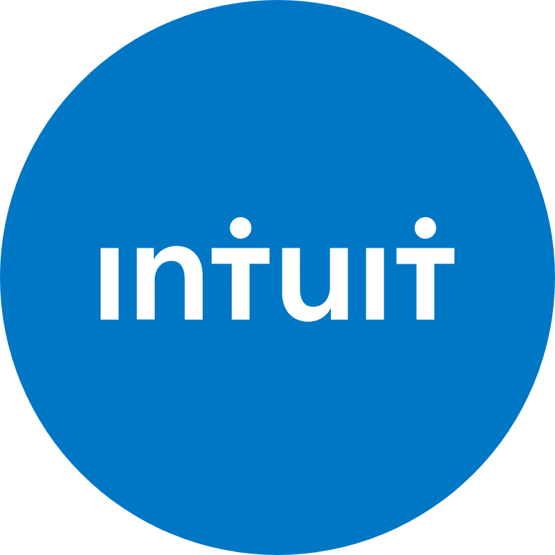
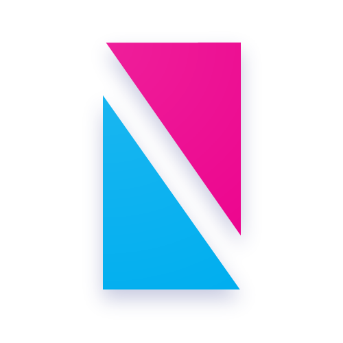
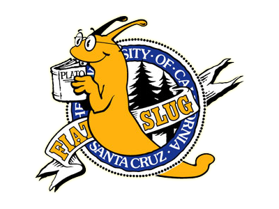

Work Experience
Intuit
Software Engineer 2, Fintech
– Present
- Built and maintained components in a microservice, design system, and plugin ecosystem
- Led the refactor of legacy React code, implementing efficient React hooks for state management and optimizing network requests
- Integrated observability and created custom alerts via Splunk and Amplitude to monitor feature performance
- Provided expert knowledge and experience to data analysts to help create A/B tests that properly captured user behavior at the right moments
- Collected and analyzed user feedback to iteratively improve product experiences, increasing customer satisfaction
- Mentored multiple interns and new hires, helping them transition to full-time roles
Tailored Brands
Front-End Web Developer
–

- Lead team of over 5 developers by facilitating daily stand ups, distributing workload, and administrating code reviews
- Collaborated with engineering, business and creative teams, defining and gathering requirements for the form and function of new features, delivering in biweekly sprint cycles
-
To support analytics, programmed data gathering requirements into features and site experiences, created supporting dashboards and human readable debug messages to demonstrate their integrity
(Heap Analytics, Google Analytics, Tag Manager) - Designed and implemented A/B test experiments for the Men’s Wearhouse website, launching over 100 tests and generating over $50 million in projected incremental revenue within a single year
Girls Who Code
Summer Immersion Program Instructor
–

- Lead instruction during a 7-week summer course for high-school girls, with a focus on inspiring girls to explore computer science and technology
- Curriculum included Scratch, Python, robotics (Arduino), data science, and web development
Nyentek
Software Developer
–
- Architected and implemented a webapp for court reporters to manage file distribution to their clients
- Installed hardware and deployed application at client site
- Built with React, Redux, Node.js, Express, MongoDB
Pure Storage
Full Stack Web Development Intern
–
- Full-stack implementation of a web application for real-time monitoring server diagnostics
- Created an interactive analytics heatmap updates up to thousands of times a minute based on database inserts
- Built with Amazon Web Services (S3, Lambda), RethinkDB, Node.js, D3.js, Socket.io
Education
University of California, Santa Cruz
Cognitive Science BS, Computer Science BA

–
- Contributed an event detection algorithm to Smart Energy Disaggregation Systems (SEADS), a NSF funded project
- Designed camera equipment for lip tracking as a research assistant in Alan Kawamoto's linguistics lab
- Webmaster for the Cognitive Science Student Association (CSSA)
- Completed upper division machine learning, artificial intelligence, and human-computer interaction courses